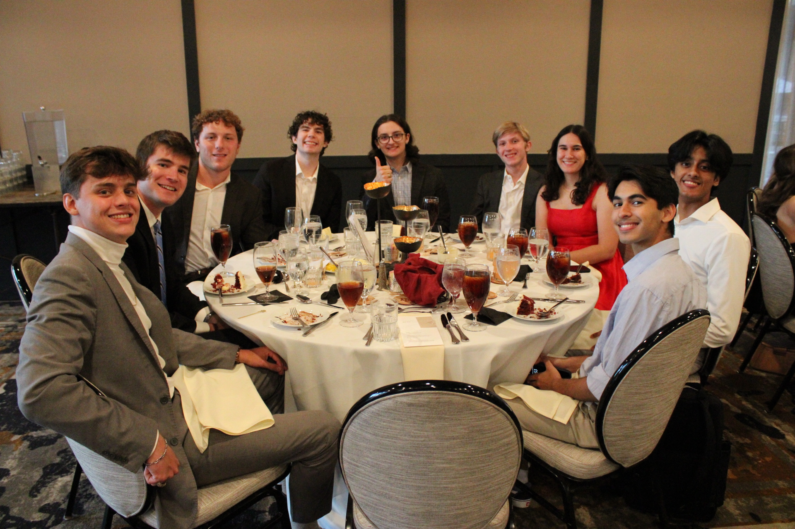
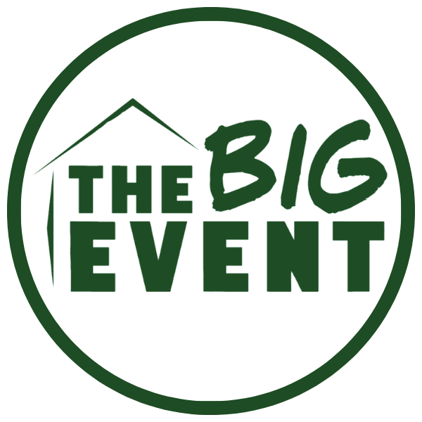
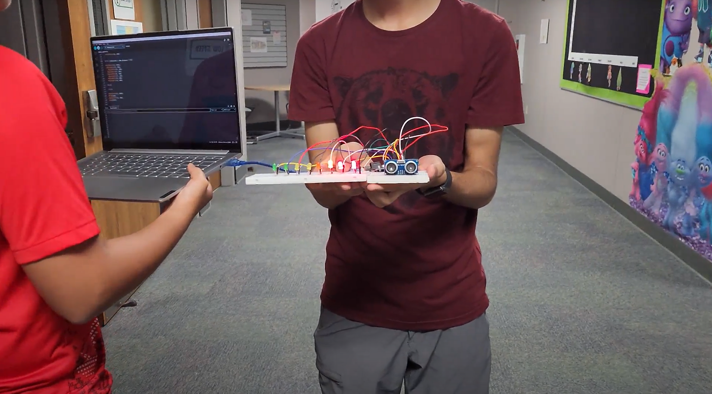

My Services
Aggies & Mentors
As the Operations and Assessment Director for this SGA Committee, I oversaw and managed the Chronus system software that is used to match mentors and mentees based on their profiles. This organization strives to help undergraduate and graduate students find the help they need to succeed profesionally, and I am glad to be a part of that mission.
Learn more about Aggies & Mentors here!

Big Event with EMC
I particpiated in Big Event alongside the Engineering Mentorship Council, where we helped out communities in the Bryan/College Station area. Our group helped out a family with gardening, of which I was tasked with laying fresh mulch into their yard. It was a great experience that helped us college students connect with the locals and understand what it truly means to help out others.
Check out how impactful Big Event is here!

Bench Construction
To help out one of my friends with his Eagle Scout Project, I helped assemble planter benches for my high school. We sanded, drilled wood, applied coats of sealant and paint, and planted annual flowers in potting soil. This took place over a few days to allow for the paint to set and the flowers to grow. It was a great experience to help out a friend and give back to the school that has given me so much.
Check out how Boy Scouts works here!

Irving Art of Science
Over the summer, I spent time working with a teaching program called Irving Art of Science where I helped out middle schoolers with their science projects. I helped them understand the scientific method, how to conduct experiments, and how to present their findings. It was a great experience to help out the next generation of scientists and engineers.
Find out more about the program here!
